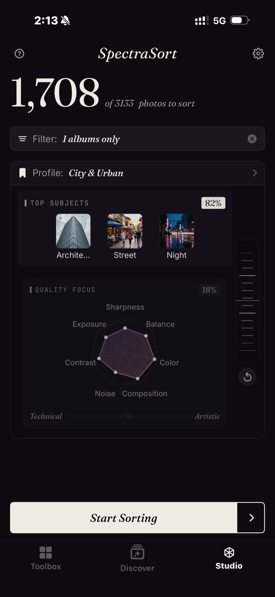

Seven quality axes, weighted one by one or all at once on a Technical / Artistic slider. Up to three subjects — a photo can be one of them. A wheel to trade subject match against quality. Save the setup as a profile and switch per shoot.
A wedding profile that forgives noise. A product profile that forgives nothing. A street profile that puts composition first.
Studio, in full →The one-tap tools decide what a good photo is. Studio hands that decision back: weight seven quality axes, set up to three subjects, save it as a profile — and every sort runs your rules, on your phone.
Every photo is scored on seven axes. In the one-tap tools the weights are fixed. In Studio each one is yours to set — or slide all seven at once from Technical to Artistic.
Put up to three subjects on a sort — a word, a theme, or a photo. Then turn the wheel: at 75% it hunts the subject and forgives the frame; at 25% it wants the best frame and only nods at the subject.
The loop is a real sort: Portrait, Street and Nature over 650 photos, the wheel turned from 75 / 25 to 25 / 75 and back.
Save any Studio setup as a named profile. Bookmark the ones you reach for, pick one per sort, and the Your Taste profile the app learned from your own keeps opens here too — nudge its axes like any other.
The capture: a City & Urban profile — Architecture, Street, Night at 82% subject weight — pointed at one album of 1,708 photos.

What the same seven axes look like when the job changes. Starting points, not presets — each is a minute in Studio and a saved profile after that.
Noise forgiven, exposure and composition up. Three subjects: the couple, the guests, the details.
Sharpness, exposure and contrast all the way up. Composition barely weighted — the client already chose the angle.
Balance and composition lead, noise is forgiven, the wheel leans toward the subject so the moment outranks the clean frame.
Studio sorts whatever is in the iPhone's Photos library — the phone's own shots, and camera files that have been imported or synced into it. Picks end as an album, as Favorites, or in the share sheet, so they show up wherever that library already does.
Anyone can open Studio and set up a sort. Running it is Premium — one purchase, unlimited sorts, no subscription. Built by an indie dev who uses it daily.
Get the app